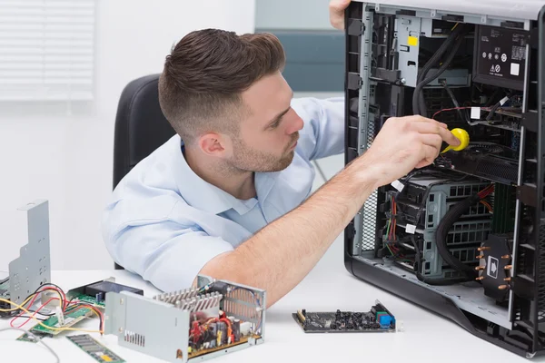

Cursos Disponiveis no IFPA
Campus Altamira
|  Infomática |
Instalar sistemas operacionais, aplicativos e periféricos para desktop e servidores. Desenvolve e documenta aplicações para desktop com acesso a web e a banco de dados. Realiza manutenção de computadores de uso geral. Instala e configura redes de computadores locais de pequeno porte. |
|---|---|
Edificações |
Objetivo preparar o profissional para projetar e executar obras de acordo com os procedimentos legais, propondo alternativas do uso de técnicas e materiais de construção, elaborando o planejamento e o orçamento necessários à escolha da melhor solução a ser adotada na ocupação do solo, tendo por premissa o respeito e a preservação ambiental. |
 Agropecuária |
Formar técnicos em agropecuária de forma integrada ao ensino médio, visando contribuir para o desenvolvimento da agricultura familiar e camponesa da região do Baixo Tocantins, considerando as dimensões econômicas, socioculturais, ambientais, éticas e políticas. |